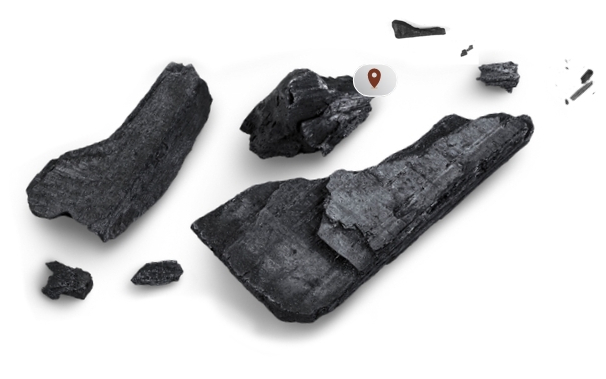

Experience a range of handcrafted skincare products, made fresh to order in micro batches, with certified organic, natural and plant based ingredients, created on the belief that beauty should be good for you! We bring to you, a deeply nourishing, honest-to-goodness, chemical-free range of skincare products, with the sensorial appeal of delicious food.
Mesmerizing textures, aromas and ingredients, encourage you to delight in your skin care ritual, to savour the product experience, as one would, a fine dessert.

Colette; which began with her earnest search for the right organic alternatives for her own personal care products. But she found the market to be full of products riddled with chemicals, despite their natural claim. Finally, she decided to make her own skincare in her pantry.
Colette; which began with her earnest search for the right organic alternatives for her own personal care products. But she found the market to be full of products riddled with chemicals, despite their natural claim. Finally, she decided to make her own skincare in her pantry.
Colette; which began with her earnest search for the right organic alternatives for her own personal care products. But she found the market to be full of products riddled with chemicals, despite their natural claim. Finally, she decided to make her own skincare in her pantry.

Arriving from far-off lands to our loving hands, all our ingredients are organic, ethically sourced and vegan. We are mindful about their shelf life as they are all fresh and plant based, carefully storing them in ideal conditions. They are hand-whipped and stored in glass or metal containers in a climate controlled raw material room at an evenly controlled temperature of 24 degrees at all times. These are procured from around the world and from places known for their best quality

"At The Skin Pantry, Clean Beauty is Transparency. It means products with honest labels, with credible claims and clear ingredient listings. And the experience of creating these, brings indescribable joy, albeit with its own set of challenges.
Our handcrafted journey has been a rollercoaster ride, with twists and turns and blocks; The dilemma when you're faced with the decision between quality and growth…. the constant search to find a balance between fiercely protecting one’s product integrity as well as protecting profits.… It’s all so personal, intimate even, because we create the products ourselves, with our own hands and hearts, without machines.
So when we make a sale, it is such a beautiful acknowledgment, a validation that what we do makes a difference, and one that is of value, and I am reassured that it has all been worth it. Today I marvel at the amazing offerings my competitors have created, how the clean beauty market has burgeoned and grown. And I revel in being a part of a sisterhood, one of the few driven souls, all of us doing our bit to contribute and lift the natural skin care to the next level. And it fuels me in my effort to raise the bar, create newer offerings, extend existing ranges and explore new formulations."